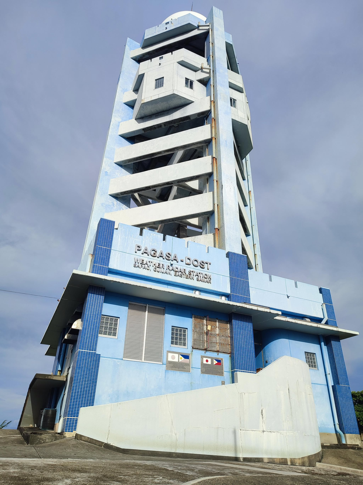

The PAG-ASA radar weather station was built in Sapao primarily because of its proximity to a mountainous area. Radar stations are typically installed on elevated locations like mountains to minimize obstructions that can interfere with signal transmission, such as buildings or trees. If the station were constructed in a lower, more populated area like the town center, it would be more vulnerable to damage from debris and structural obstacles, especially during strong weather events. Building it on a mountain doesn't guarantee complete protection, but it significantly reduces the risk of structural damage and allows for better radar coverage.
When was the PAG-ASA station built in Sapao? While there is no exact record of the construction date, it is estimated that the PAG-ASA radar station in Sapao was established around 1967 or 1968. However, it officially became fully operational in the early 1970s.
PAG-ASA provides crucial meteorological services, primarily weather forecasting and monitoring. These include daily weather updates, typhoon alerts, rainfall advisories, and climate-related information that help residents, farmers, fisherfolk, and local authorities make informed decisions for safety and planning. Weather updates and warnings from PAG-ASA are currently disseminated through social media platforms such as Facebook, along with SMS text messages or Messenger sent directly to individuals or community groups — methods that ensure timely and widespread communication of important weather information.
During Super Typhoon Yolanda, PAG-ASA's forecasts and warnings gave the community enough time to prepare — and, in many cases, to evacuate.

The PAG-ASA office has been very helpful, especially during typhoons and other natural disasters. For the most part, the community understands PAG-ASA's standards and advisories — the Local Government Unit occasionally conducts disaster preparedness seminars where advisories and warning systems are explained, though more frequent, PAG-ASA-led training could still improve overall understanding.
Some visitors often ask about the large round object near the station. It's called a radome, or radar dome — it houses and protects the radar antenna inside. The antenna spins continuously from 0 to 360 degrees, scanning the skies to monitor cloud patterns, rainfall, and other weather conditions, while the dome shields the equipment from harsh weather without disrupting its function.